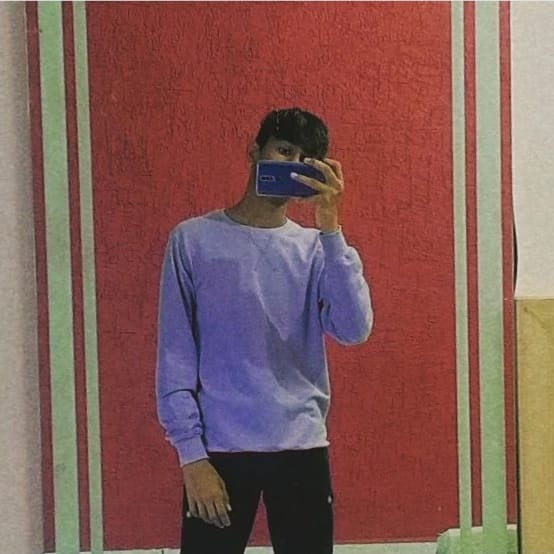

|  | I am Munaf Badarpura, a college student majoring in computer science. I achieved the top rank in my school during my 12th-grade exams, which has motivated me to excel in the field of technology. Computer science has become my passion, allowing me to explore programming, algorithms, and software development. I actively follow tech trends, participate in hackathons, and engage in collaborative projects. Beyond academics, I enjoy hiking, reading, and volunteering for tech-related events. With a strong commitment to excellence, I'm eager to contribute to the world of computer science and make a positive impact. My journey is just beginning, and I'm excited for the future |